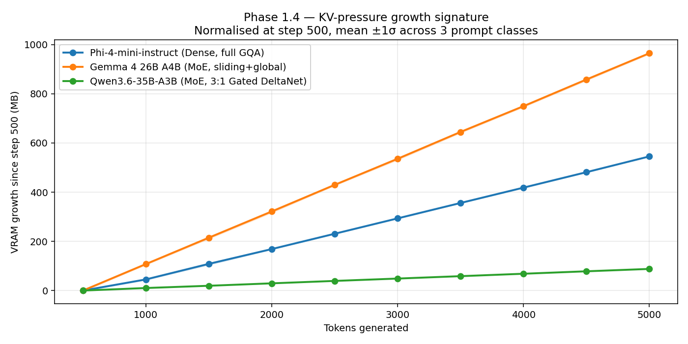
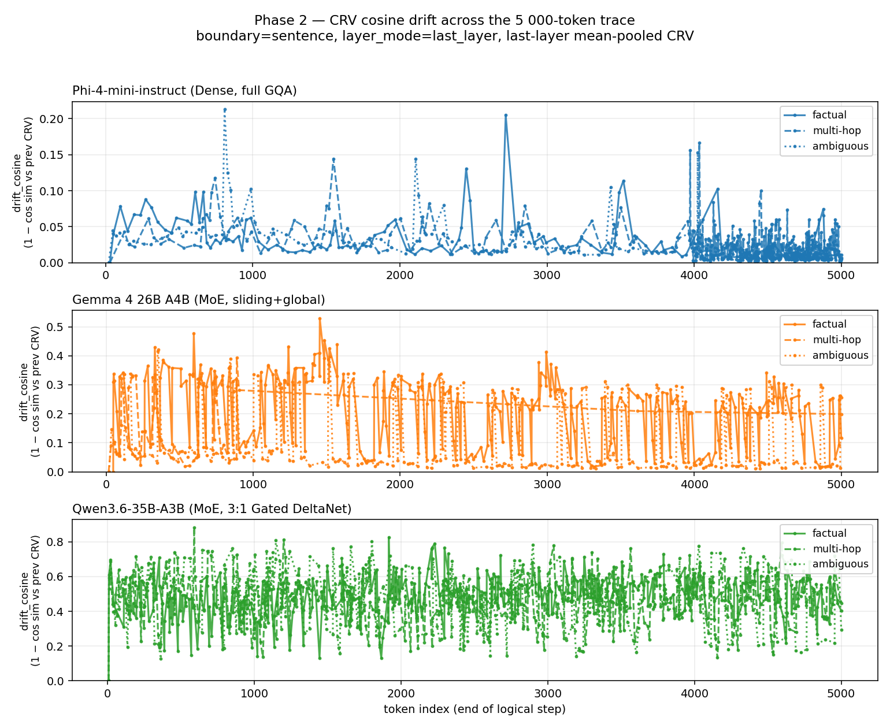
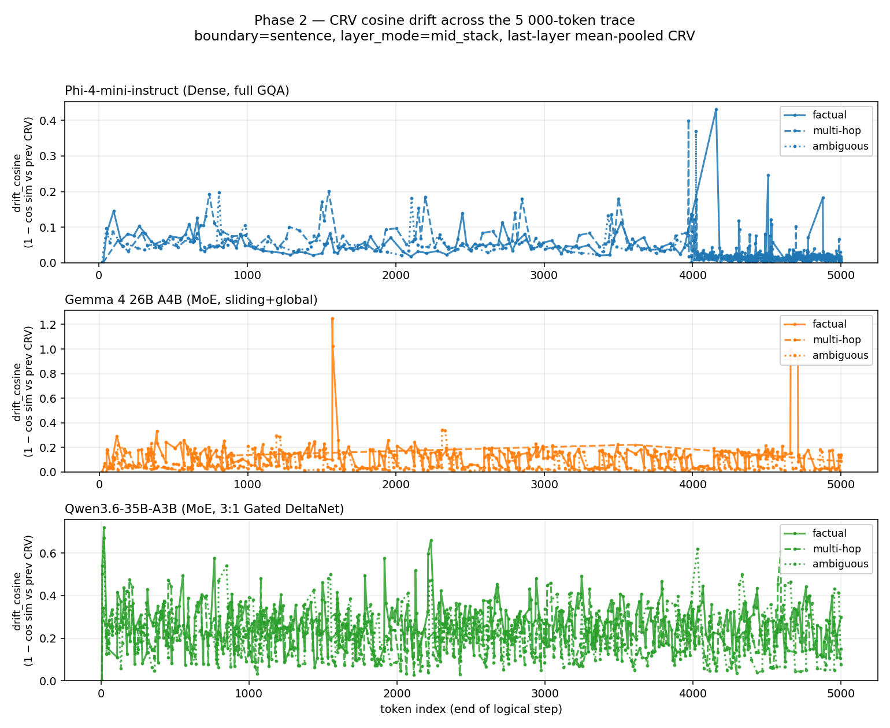
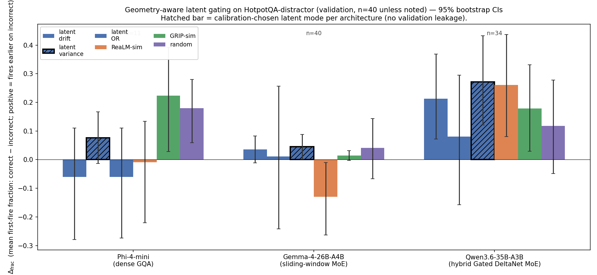
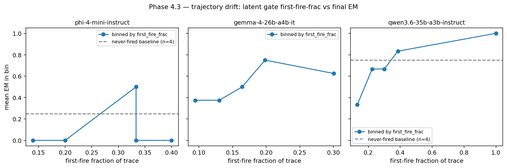

Large language models sometimes drift into wrong reasoning mid-thought. Existing detectors wait until the model has already written the bad text. We ask: can the model's own internal hidden states reveal the drift before the next token is even generated?
Modern LLMs reason step-by-step. When a step goes wrong, everything after it is wasted compute and wrong answers. The question is: when can we detect it?
If you've used ChatGPT, you've seen it "think out loud." When asked "Who directed Big Stone Gap, and what New York neighborhood are they from?", the model doesn't just blurt an answer — it reasons through steps:
This is multi-hop reasoning — the model "hops" through facts to reach the answer. But what if Step 2 was wrong? Then Step 3 would be wrong too, and the model would confidently deliver a hallucinated answer.
Existing tools to detect these errors fall into two camps — and both have a structural delay:
Methods like Self-RAG and GRIP train the model
to emit special tokens like [Retrieve] when it's uncertain.
Problem: Requires retraining the model. GRIP needs 40k SFT samples +
5k RL samples. Not applicable to off-the-shelf models.
Methods like DRAGIN, SELFDOUBT, and
ReaLM-Retrieve look at what the model already wrote
— scanning for hedge phrases like "I'm not sure" or measuring token entropy.
Problem: By the time you read the text, the model has already
committed those tokens. You're always one step behind.
We test on three 2026 models that represent fundamentally different approaches to building a transformer. All have ~3-4 billion active parameters per token, so compute per token is roughly matched.
The classic. Every layer is a standard attention layer. Every token attends to every previous token. Simple, well-understood — like a textbook CNN but for text.
The efficient giant. 128 expert sub-networks, but only 8 activate per token. Uses a sliding window: each token only "sees" the last 1,024 tokens in most layers.
The radical. 30 of 40 layers replace attention with a recurrent mechanism (Gated DeltaNet) that uses fixed memory regardless of context length. Only 10 layers use real attention.
Think of a CNN with multiple convolutional filter banks. Now imagine that for each input patch, a router selects only 8 out of 128 filter banks to apply. That's MoE (Mixture of Experts). The router learns which "expert" sub-networks are best for each input. This means:
We measured how much memory each model uses as it generates longer sequences. The result surprised us: the newest architecture barely uses any extra memory.
When a transformer generates text, it needs to remember all previous tokens. It stores this memory as Key-Value (KV) pairs — one pair per layer per token. As the sequence gets longer, this cache grows linearly. For a model with 32 layers generating 5,000 tokens, this can be hundreds of megabytes of GPU memory.
Think of it like a CNN's feature maps: just as deeper/wider feature maps consume more memory, longer KV caches consume more VRAM. The difference is that KV caches grow with sequence length, not spatial resolution.

Figure 1: KV cache growth per token across 5,000 tokens of greedy generation. Phi-4-mini (dense) grows at 128 KB/tok — standard linear scaling. Gemma-4 grows at 221 KB/tok — steeper than Phi because the sliding window bounds compute but HuggingFace's cache implementation doesn't evict old entries. Qwen3.6 is nearly flat at just 27 KB/tok — only its 10 full-attention layers contribute to cache growth; the 30 Gated DeltaNet layers use a fixed-size recurrent state.
| Model | KV Growth | KB/token | Tok/s | Slowdown over 5k |
|---|---|---|---|---|
| Phi-4-mini | 643 MB | 128 | 47 | 1.0× (none) |
| Gemma-4-26B | 1,105 MB | 221 | 13 | 1.0× (none) |
| Qwen3.6-35B | 135 MB | 27 | 13 | 0.97× (faster!) |
We extract hidden-state vectors at each reasoning step and measure how they change. The key discovery: where in the network you look matters enormously.
A transformer processes each token through multiple layers. After each layer, there's an intermediate vector — the hidden state. In a CNN, this is analogous to the feature map at each layer: early layers capture low-level patterns, deeper layers capture high-level semantics.
For Phi-4-mini, each token's hidden state is a 3,072-dimensional vector.
For Qwen3.6, it's 2,048 dimensions. We can extract these vectors
without any model modification — just by asking HuggingFace Transformers to output
them (output_hidden_states=True). The overhead is ≤3% throughput.
Our first attempt extracted hidden states from the last layer — the deepest, most "semantic" representation. This worked fine on the dense model (Phi). But on the MoE models, the signal was overwhelmed by expert-switching noise.

Last-layer drift: Phi (top) shows clean, sparse spikes — exactly the "event detection" signature we want. But Qwen (bottom) is saturated near the ceiling (mean drift 0.479) — the expert router changes which sub-networks run on each token, creating noise that drowns the real signal.

Mid-stack drift (the fix): By reading from the middle layer (layer 20/40 for Qwen, 16/32 for Phi, 15/30 for Gemma) — before the expert routing layer — Qwen's drift drops from 0.479 to 0.235 and becomes informative. The mid-stack signal reflects content, not routing.
| Model | Last-Layer Drift | Mid-Stack Drift | Change | Last-Layer Var | Mid-Stack Var |
|---|---|---|---|---|---|
| Phi-4-mini | 0.024 | 0.033 | +38% | 2.0 | 4.4 |
| Gemma-4-26B | 0.175 | 0.106 | −39% | 476 | 77 |
| Qwen3.6-35B | 0.479 | 0.235 | −51% | 411 | 0.09 |
These are real traces from our experiment logs — actual model outputs with measured drift and variance at each reasoning step.
Note: Qwen solves this in just 3 steps. Drift spikes at Step 3 (0.346) when the model transitions from reasoning to the answer — but variance stays near zero (0.11). On Qwen, directional change is the signal, not energy change. The gate fires at step 2, but the model was already converging correctly.
Compare: On the same question, Gemma uses 9 steps (vs Qwen's 3) and its variance is huge (310 vs 0.11). The CRV gate fires at Step 3 with drift=0.192 — the moment the model fails the second hop. In a real system, this is where retrieval augmentation would inject "Buck-Tick formed in Fujioka, Gunma" and correct the trajectory.
| Step | Drift | Var | Fired? | Text (truncated) |
|---|---|---|---|---|
| 1 | 0.000 | 0.00 | — | "To determine which memorial park…" |
| 3 | 0.394 | 0.02 | 🔥 | "1." |
| 4 | 0.389 | 0.02 | 🔥 | "Paragraph 2 describes N.P." |
| 5 | 0.093 | 0.04 | — | "Dodge Memorial Park (also known as Dodge Park)…" |
| 7 | 0.355 | 0.06 | 🔥 | "2." |
| 8 | 0.298 | 0.06 | 🔥 | "Paragraph 9 describes Hummel Park…" |
| 14 | 0.326 | 0.02 | 🔥 | (newline — topic transition) |
| 15 | 0.349 | 0.02 | 🔥 | "Therefore, the memorial park…is N.P." |
| 18 | 0.259 | 0.02 | 🔥 | "Answer: N.P." — truncated! |
Key observation: Qwen3.6's variance stays near zero throughout (≤0.06). But drift spikes at every topic transition (Steps 3, 4, 7, 8, 14, 15). The gate fires 12 times across 18 steps. This is the "disjunction" pattern — the model keeps hopping between candidate parks, never settling. The final answer is technically correct ("N.P. Dodge Memorial Park") but the extraction truncates at the period after "N.P."
The entire CRV system is ~400 lines of Python across four files. Here are the
key snippets from the actual implementation (from scripts/crv/):
output_hidden_states=True.
Works identically on all three architectures.
class HiddenStateCapture:
# Extract last-token hidden states from forward output
def record(self, step_idx, output):
hidden_states = getattr(output, "hidden_states", None)
# hidden_states is a tuple of (n_layers + 1) tensors
# each shaped (batch, seq_len, hidden_dim)
# On decode: seq_len = 1, we want the only token
captured = {}
for layer_idx in indices:
tensor = hidden_states[layer_idx]
last_tok = tensor[:, -1, :].squeeze(0)
captured[layer_idx] = last_tok.detach().to(
device="cpu", dtype=torch.float32
) # CPU fp32 immediately — no GPU memory leak
return captureddef commit_step(self, step_idx, token_idx):
# Mean-pool per-token hidden states for this step
per_layer_means = []
for layer_idx in layer_indices:
stacked = torch.stack([hs[layer_idx] for hs in self._per_step_buffer])
per_layer_means.append(stacked.mean(dim=0))
crv = torch.cat(per_layer_means, dim=-1) # the CRV vector
norm = crv.norm().item()
# Cosine drift from previous CRV
cos = F.cosine_similarity(crv.unsqueeze(0), self._previous_crv.unsqueeze(0))
drift = 1.0 - cos.item()
# Rolling variance over L2-norm history
self._norm_history.append(norm)
variance = torch.tensor(list(self._norm_history)).var(unbiased=True)class CRVTrigger:
VALID_MODES = ("or", "and", "drift", "variance", "none")
def fired(self, feature):
d = feature["drift_cosine"] > self.threshold_drift # e.g. > 0.1
v = feature["variance_l2_window"] > self.threshold_var # e.g. > 1.0
if self.mode == "or": return d or v
if self.mode == "and": return d and v
if self.mode == "drift": return d
if self.mode == "variance": return vOur trigger has no learned parameters. It mean-pools hidden states at sentence boundaries and fires when the resulting vector drifts or becomes unstable.
. ? ! \n) with ≥8 tokens since last boundaryHigh drift = the model's internal representation just "jumped" to a different region of concept space. On Qwen3.6, this is the dominant signal — norm variance collapses to zero at mid-stack, but directional changes remain.
High variance = the "energy" of the representation is fluctuating. On Phi (dense), this is the stronger signal — clean spikes at meaningful transitions while drift stays low.
The key finding: the optimal aggregation rule depends on the architecture. We select it from a 120-question calibration split (never seen at evaluation):
| Model | Selected Mode | Why |
|---|---|---|
| Phi-4-mini | variance | Dense attention → stable directional flow, but norm fluctuations carry the signal |
| Gemma-4-26B | drift OR variance | Hybrid sliding/global → both channels contribute; neither dominates alone |
| Qwen3.6-35B | drift OR variance | Recurrent state → directional drift is the primary signal; OR adds a safety net |
We compare CRV against four training-free baselines. Each represents a different philosophy for detecting when the model needs help.
Scans the model's generated text for hedge phrases like "I'm not sure," "let me verify," "actually," "hmm." Computes a hedge-to-verify ratio per step.
Monitors the second-order difference of per-step mean entropy. If entropy acceleration is high, the model's uncertainty is changing rapidly — a sign of instability.
Combines three signals per generated token: entropy × attention_max ×
stopword_filter. Uses the last attention layer to identify tokens the
model is uncertain about. Requires output_attentions=True.
out.attentions returns only the 10 full-attention layers
(compact tuple, not None-padded). The attention layer picker had to return
a tuple index, not a model-layer index. This bug was caught by the
smoke test.
Fires at the same rate as the CRV gate (0.30 per step) but at random positions. Deterministic seed for reproducibility. This is the "chance" baseline — if CRV can't beat random, it's not learning anything useful.
CRV significantly outperforms all baselines on the MoE architectures. On the dense model (Phi), it's an honest negative. Here's the full picture.

Figure 4: Per-architecture Δfrac with 95% bootstrap CIs. Δfrac = how much earlier the gate fires on incorrect traces vs correct traces (positive = fires earlier on wrong answers = good). The calibration-chosen mode is highlighted per architecture. CRV (latent OR) significantly beats both text-parsing baselines on Gemma at 95% confidence.
For each question, we record when the gate first fires (as a fraction
of the total trace length). Then we compute:
Δfrac = mean_fire_frac(incorrect traces) − mean_fire_frac(correct traces)
Positive Δfrac means the gate fires earlier on questions the model
gets wrong — exactly what we want for a retrieval trigger. The higher, the better.
| Architecture | CRV (latent) | SELFDOUBT-T1 | ETC | Random |
|---|---|---|---|---|
| Phi (variance) n=11 | +0.076 [−0.017, +0.167] | n/a (never fires) | +0.152 n.s. | +0.180 ✓ |
| Gemma (OR) n=40 | +0.045 [+0.002, +0.089] ✓ | n/a (never fires) | −0.015 n.s. | +0.041 n.s. |
| Qwen (OR) n=34 | +0.272 [+0.122, +0.434] ✓ | n/a (never fires) | −0.033 n.s. | +0.118 n.s. |
| Architecture | CRV − ETC | CRV − Random | Verdict |
|---|---|---|---|
| Phi | −0.076 (loses) | −0.104 P(>0)=0.067 | Honest Negative |
| Gemma | +0.060 ✓ | +0.004 (ties) | Beats ETC + baselines at 95% |
| Qwen | +0.305 P(>0)=0.992 ✓ | +0.154 P(>0)=0.931 | Large effect, power-limited vs random |
Even where the head-to-head isn't significant, the mechanism works. Sorting traces by when the CRV gate first fires reveals a monotone relationship:

Figure 5: Exact-match accuracy by first-fire quintile. Traces where CRV fires earliest (Q1) have the lowest accuracy; traces where it never fires have the highest. The monotone shape holds on all three architectures.
Earliest quintile EM = 0.667
Never-fired EM = 0.800
33pp gap
Q1 EM = 0.375
Q4 EM = 0.875
50pp gap
Never-fired EM = 0.875
Firing traces EM ≈ 0.200
Difficulty oracle, not earliness oracle